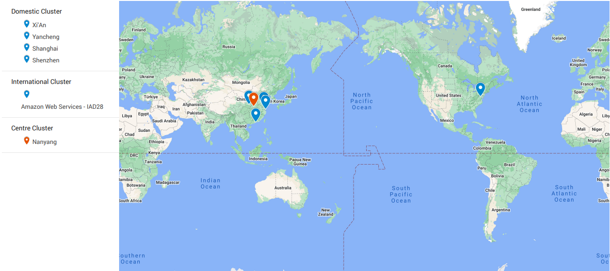
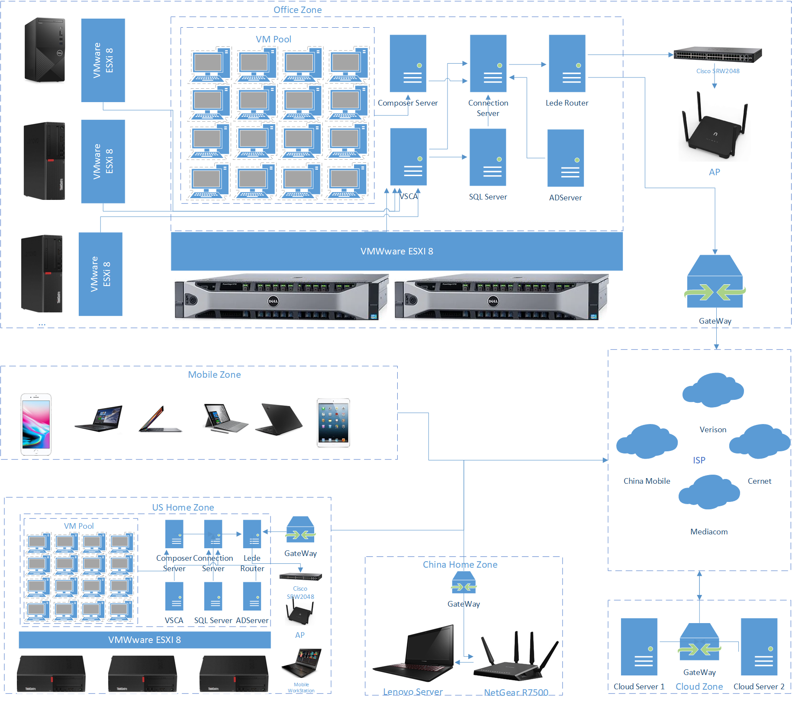
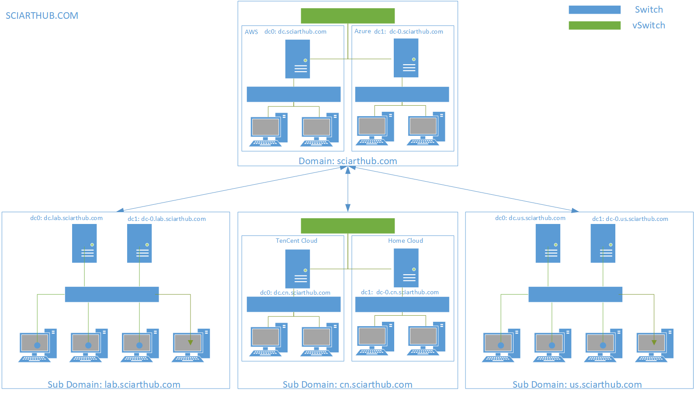
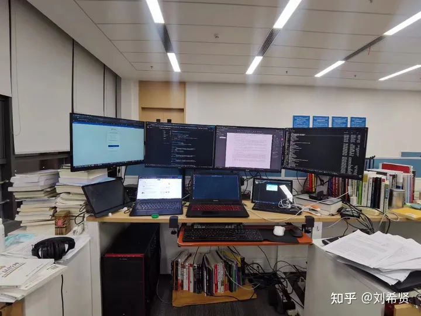
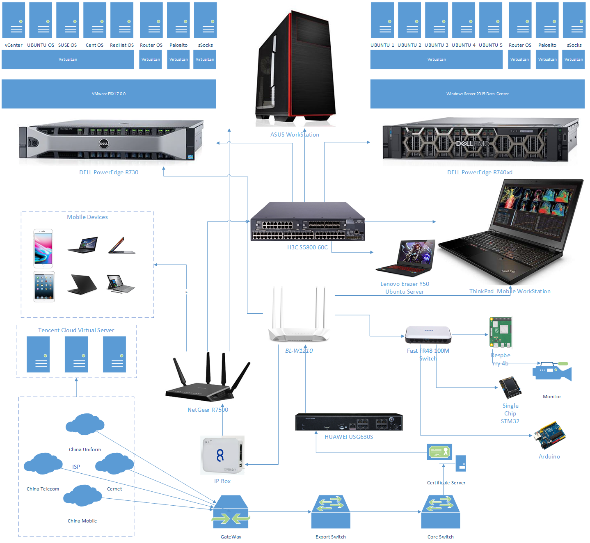

Hyper Simulation Center - sciarthub.com
Speed defines the winner.
Introduction
Hyper Simulation Center(HSC) is an specific implementation of the experimental management module, which is contained in the theory of ReDevOps, proposed by Johannes. ReDevOps can be regarded as a derived version of DevOps, which is specific for the research activities. Different from the traditional theory of DevOps, ReDevOps focuses more on how to combine research, development, and operation and maintenance to help do research efficiently. The ultimate purpose of ReDevOps is to help end the meaningless labor for scientific research. The ReDevOps theory is introduced in the Gitbook, written by Johannes. Johannes is about to finish this book in the year of 2023, as a gift for his Ph.D. career.

The history of Hyper Simulation Center
HSC Gen3(2023 - Present)Introduction
HSC Gen2(2022 - 2023)Introduction
Since Johannes left Huazhong University of Science and Technology, Johannes lost his convenient work environment. Johannes cannot leverage his infrastructures to for his work. The only thing he can relied is his old friend, the mobile thinkpad workstation, which cannot help Johannes face the quickly changing working environment. To help improve his work, quickly carrying out experiments, and be an independent research. It costs Johannes 1 month to reconstruct his second generation lab.

The Week Power Typology of HSC Gen2

The Typology of Network for HSC Gen2 HSC Gen1(2019-2022)
Main Equipments in LabJohannes's self raised and self built laboratory (2019-2022) with equipment above 2500$ includes:
Overview of HSC Gen1The weak power topology and the corresponding workbench of the HSC Gen1 is shown as following:

Workbench of HSC Gen1

The Week Power Typology of HSC Gen1 |